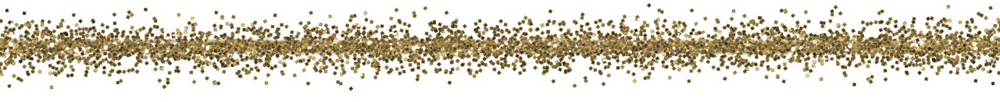

Введение
На нашей планете есть удивительный и неповторимый мир – подводный. Как мало мы о нём знаем! Намного меньше, чем о жизни животных и птиц. А всё потому, что люди на дно океанов стали спускаться не так уж и давно, всего пару веков назад. А для исследования подводного мира это небольшой промежуток времени. Загадки моря для людей были неразрешимыми, поэтому порождали много легенд и мифов. Например, что подводным миром повелевают всемогущие боги… Но человек всегда стремился познать неизведанное и непонятное. Сейчас у нас есть специальное оборудование, которое помогает опуститься на дно даже самого глубокого моря, измерить температуру, посмотреть, как живут рыбы, что они делают и даже сфотографировать их или снять на плёнку, чтобы потом мы с вами смогли всё это увидеть.

А ведь было время, когда у человека были только лодка да удочки. Вы спросите, как же они могли изучать жизнь рыб? Героические исследователи прошлого на веревке спускались на небольшую глубину, задерживали дыхание и наблюдали за рыбами. Представляете, как им было трудно? Сегодня нам открыт доступ в необъятные морские просторы! Кстати, изучать подводный мир человечество стало лишь немногим раньше, чем космос. Это стало возможным благодаря развитию науки. Сегодня изучением подводной жизни океанов и морей занимаются биологи, геологи и географы всего мира. А все процессы, происходящие на дне океанов морей, и то, как взаимодействует океан с сушей и атмосферой, изучает наука, которая называется океанология или океанография. На дне океанов осталось много разных сооружений, в разное время возведённых человеком, которые из-за катастрофы или наводнения оказались под водой. Их изучением занимается подводная археология. Исследование подводного мира стало возможным с тех пор, когда появились аппараты, при помощи которых можно дышать под водой. Изобрёл их известный учёный Жак-Ив Кусто. Это он открыл нам удивительный мир океанов и рассказал о жизни его обитателей. Но несмотря на то, что наука продвинулась вперёд, и теперь можно опуститься даже на дно Марианской впадины – самого глубокого места на Земле, океан всё так же хранит множество тайн и загадок, которые ещё предстоит разгадать. В этой книге вы познакомитесь с некоторыми его обитателями, узнаете, как они живут, чем питаются. И, возможно, кто-то из вас захочет стать океанологом, открыть неизведанные участки моря и найти рыбку или морское животное, ещё неизвестное человеку.
Рыбы
Рыбы – самые загадочные существа на планете! Каких только рыб не увидишь в природе! Бывают они и круглые, как шар; вытянутые, как бревно; плоские, как блин или очень длинные, как нитка. Существуют рыбы мягкие, как слизни или твёрдые, как грецкий орех; есть гладкие, а есть с иголками. Рыбы, после насекомых, считаются самыми многочисленными живыми существами на земле. В отличие от животных, у рыб кровь холодная, тело сплюснутое и вытянутое, и защищено чешуёй. В воде рыбы передвигаются с помощью плавников, которые могут быть спинными, брюшными, грудными, хвостовыми и анальными. Так как рыбы живут в воде, вместо лёгких у них жабры. А благодаря плавательному пузырю рыбы могут без труда держаться на нужной им глубине.
Эволюция и распространение
Рыбы были самыми первыми позвоночными обитателями Земли. Появились они примерно 400 миллионов лет назад. Рыбы могут жить как в пресной, так и в солёной воде, а также на разной глубине, вплоть до девяти километров. Сегодня известно около 27 000 видов рыб, из них 5 000 – пресноводные. Если вы думаете, что все рыбы только и делают, что плавают в воде, то вы ошибаетесь. Некоторые из них умеют ползать по суше, ходить по дну и даже летать по воздуху. Да-да, именно летать по воздуху, и если вы дочитаете эту книгу до конца, то узнаете, о какой рыбе идёт речь. Не все рыбы одинаковы по расцветке. Даже самый талантливый художник с богатым воображением не придумает такое сочетание красок, каким наградила природа мир океана. А ещё больший восторг вызывает то, как хитроумно морские обитатели добывают себе пропитание, защищаются от врагов, размножаются и сохраняют потомство. Первые рыбы на нашей земле были примитивными, они прожили недолго. Благодаря естественному отбору, которому подвержены все живущие на планете существа, за миллионы лет природа создала современных рыб. Их изучением занимаются ихтиологи, а наука – ихтиология – является одним из разделов зоологии. Слово «ихтиолог» происходит от греческого слова «ихтис», то есть «рыба». В зависимости от того, где живут рыбы, они разделяются на морских, пресноводных и глубоководных.
Виды и семейства рыб
Как и любые другие животные, рыбы делятся на виды и семейства. Существует два класса рыб - хрящевые и костные рыбы. Скелет у первых рыб – хрящевой. К этому классу относятся обитатели морей и океанов, такие, как скаты, акулы или химеры. У костных рыб скелет образован костными тканями. Яйца содержат масляные капли, как, к примеру, у тунцов. Благодаря масляным каплям яйца-икринки развиваются, перемешавшись с планктоном у поверхности воды, и переносятся течением с одного места на другое. К костным рыбам относятся, например, латимерии, осетры и сардины. У других костных рыб, которые водятся в прибрежных и пресных водах, плотность воды в яйцах-икринках намного больше, поэтому они опускаются на дно и там развиваются. Число икринок может доходить до нескольких миллионов. Но, к сожалению, не все икринки становятся взрослыми рыбами. Многие из них погибают ещё мальками.
Морские рыбы
Белая акула
Белая акула (её ещё называют акулой-людоедом) является одной из крупнейших хищных рыб на Земле. Она является представителем класса хрящевых рыб. В среднем эти акулы вырастают до 6-7,5 метров, распространены по всему миру. Её можно встретить где угодно: как на глубине, так и на поверхности воды, и в открытом море, и недалеко от берега. Несмотря на широкую область распространения, в тропиках и Средиземном море белая акула появляется нечасто. Тело у этой рыбы массивное, крупное, окрашено в коричневый или серо-аспидный цвет, а брюхо – в белый. Узнать ее можно по пасти с ноздревыми канавками и конусообразному заострённому рылу. Плавает белая акула очень быстро. Питается эта рыба мелкими морскими животными, а также всем тем, что попадается у неё на пути, даже тюленями и дельфинами. Пока из всех видов акул белая изучена меньше остальных, поэтому и о её повадках известно немного.
Рыба-молот
Самая интересная и экстравагантная из всех акул. Рыба-молот достигает длины до 6 метров, и встречается по всему миру. Учёным до сих пор не известно, чем обусловлена такая форма головы: она приплюснутая и широкая – до 80 см. Выросты, на которых расположены глаза, служат для поддержания равновесия, а ширина головы компенсирует неразвитость грудных плавников. Живут эти акулы в открытом море, в глубоких умеренных и тропических водах. Например, у Антильских островов, а также во Флориде встречаются целые стаи этих рыб, которые насчитывают около ста молодых особей. Кстати, эти рыбы очень плодовиты, некоторые из них за один раз производят на свет до сорока детёнышей. Питается рыба-молот в основном крабами, ракообразными, хрящевыми рыбами.
Это интересно.
Китовая акула – самая крупная акула и самая большая в мире рыба. Её вес достигает 20 000 кг, а её длина – 20 метров. Плавает она очень медленно, раскрыв рот, ширина которого может быть до 2-х метров. Питается она планктоном и мелкой рыбёшкой. У синей акулы голубая спина и белое брюхо. Она не относится к числу опасных для человека, хотя и является хищником. Эта акула всеядна, часто следует за китобойными судами и питается объедками и всем тем, что выбрасывается за борт после разделки китовых туш.
Меч-рыба
Меч-рыба может достигать 4,55 м в длину и веса 650 кг. Обитает в открытом океане в тропических и субтропических зонах. Это одна из самых быстроходных и крупных рыб. Название рыбы произошло из-за её уплощенной и заостренной верхней челюсти, напоминающей меч, и составляющей треть длины всего тела. Из-за вкусного мяса меч-рыбу раньше интенсивно отлавливали, и она была на грани вымирания. Размножается рыба-меч только там, где температура воды не ниже 24 градусов по Цельсию. Икра у неё крупная, некоторые икринки достигают 1,5-1,8 мм в диаметре. Мальки живут у поверхности воды, не опускаясь глубже трёх метров. Самостоятельно охотиться они начинают рано, ещё в «младенческом возрасте», едва достигнув 1 сантиметра в длину. В качестве пищи предпочитают других рыб, поедают всех, кто слабее и меньше их. «Меча» сначала у них нет, он начинает расти, когда мальки достигают 8 мм. Растут они очень быстро и за год достигают длины 60 см. В отличие от взрослых особей, у мальков есть зубы и чешуя, которые со временем исчезают. Меч-рыба отличается завидным аппетитом. Она быстро догоняет жертву, пронзает её острым «мечом» и проглатывает. Но она не только охотится на мелкую рыбу, может напасть и на кита. Этот хищник обладает скверным характером. Нередко рыба нападает на небольшие суда, и тогда её меч может пробить железную обшивку и доски толщиной до 40 см! От удара её лоб защищён: под мечом находятся ячейки, наполненные жиром. Вместе с мощными хрящами являются прекрасным щитом, к тому же меч – отличный амортизатор. Меч-рыба считается самым быстрым обитателем подводного мира: она может развивать скорость до 130 км в час. Меч при этом играет не последнюю роль: он как бы рассекает воду, уменьшая ее сопротивление и тем самым помогая рыбе набирать скорость. Но не только благодаря мечу хищница настолько быстра. Ей также помогают мощные мышцы, сильное сердце и специальная белковая смазка - муцин. Именно муцин уменьшает трение тела рыбы о воду, тем самым давая возможность плыть быстро.